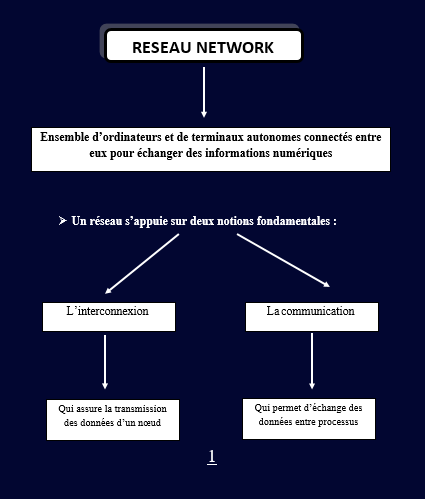
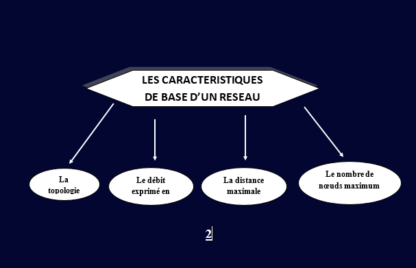
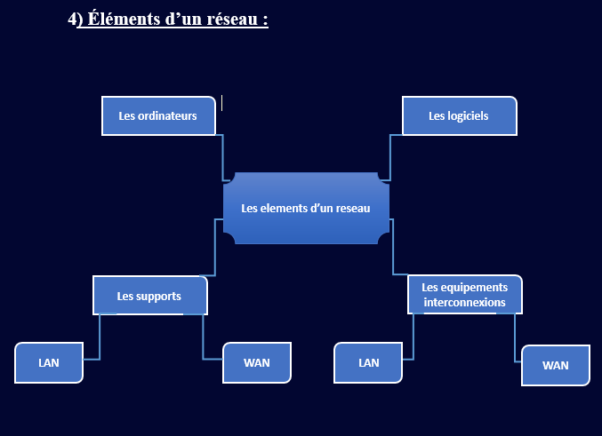
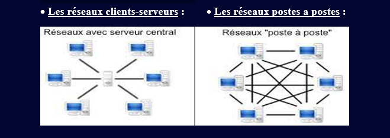
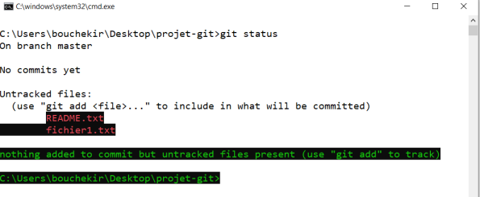
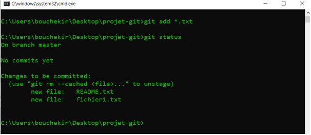
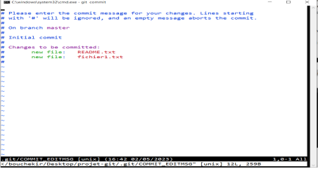

(PARTIE 01)
Les technologies de l'information et de la communication (TIC) comprennent tous les outils utilisés pour manipuler, traiter, produire, circuler, transmettre, modifier et échanger des informations, permettant une meilleure diffusion et conservation des informations sous forme de voix, d'images ou de données contenues dans des signaux optiques, électromagnétiques ou acoustiques. L’émergence des TIC est principalement attribuée à la convergence de l’informatique, des télécommunications, de l'électronique et des technologies audiovisuelles.
Les TIC (Intelligence Transitionnelle) sont une technologie qui facilite la connectivité entre différents systèmes informatiques, assure la modularité, permet une mise en œuvre facile et une convivialité, et assure un échange d’informations fiable. Ils se composent de deux aspects principaux : les composants matériels (dispositifs tels que les ordinateurs et les téléphones mobiles) et des composants logiciels. (Systèmes d'exploitation et logiciels d'application).
Les TIC offrent également la vitesse dans l'exécution des tâches, la décentralisation du pouvoir, facilitent l'accès à l'information, rationalisent et soutiennent la mondialisation des échanges, et permettent la distribution et l’intensité de la transmission d’informations dans différentes régions et à tout moment.
Les TIC sont indispensables pour faciliter la manipulation et l'échange d'informations, améliorer la connectivité, la communication et l'efficacité organisationnelle
(PARTIE 02)
Les objectifs de la communication peuvent être classés en trois dimensions : cognitif, affectif et comportemental. Au niveau cognitif, la communication vise à créer une prise de conscience, une attention et à fournir des informations sur une marque, un produit ou une idée. La phase affective se concentre sur la modification ou le renforcement de l’image du produit en influençant les attitudes et les opinions. Enfin, la phase comportementale vise à induire des actions ou des comportements souhaités, tels que faire un achat ou essayer un produit
Dans la communication, il y a des partenaires et des éléments clés impliqués. L'expéditeur transforme le message en signaux, tandis que le récepteur reçoit et reconstruit le message. Le message lui-même est codé par l'expéditeur, et le média sert de moyen de transmettre le message. Il y a des fonctions importantes dans ce processus, y compris l'encodage, le décodage, la réponse (opinion du client) et le feedback (réaction du destinataire).
Cependant, il est important de noter que le bruit peut perturber les signaux pendant la transmission.
La communication peut être classée en deux types principaux : la communication institutionnelle (corporative) et la communication commerciale ou de produit. La communication institutionnelle se concentre sur la promotion de l’image de marque d’une entreprise ou organisation par le biais de la publicité, du parrainage et du patronage. La communication commerciale ou produit vise à communiquer efficacement les caractéristiques, les performances et les avantages d'un produit d'une manière crédible et cohérente.
La communication peut être divisée en trois types : interpersonnelle, de groupe et de masse. La communication interpersonnelle implique une interaction un-à-un entre un expéditeur et un destinataire, tandis que la communication de groupe implique la livraison d'un message à plusieurs destinataires simultanément. La communication de masse, comme la publicité, vise à atteindre un large public, mais le feedback n’est généralement pas attendu. Il peut être évalué à l'aide d'indicateurs tels que les ventes ou d'autres mesures.
(PARTIE 01)


QUELQUES TERMINOLOGIES EN RESEAUX :
-Station de travail : toute machine capable d’envoyer des données vers les réseaux.
-Nœuds : toute entité pouvant être adressée par un numéro unique.
-Paquet : la plus petite unité d’information pouvant être envoyé sur le résea.
-Réseaux hétérogène.
-Le débit : mesure une quantité de bits transmises par seconde.
(PARTIE 02)

5) Classification d’un réseau :
Les réseaux peuvent être classifiés en fonction de différents critères :
5.1) Par portée l’envergure (La distance) :
• LAN (réseau local d'entreprise) : constitué d'ordinateurs et de périphériques reliés entre eux et implantés dans une même entreprise .
• MAN (réseau métropolitain ou urbain) : Correspond à la réunion de plusieurs réseaux locaux (LAN) à l'intérieur d'un même périmètre d'une très grande Entreprise ou d'une ville .
• WAN (réseau grande distance) : sont des réseaux étendus (large), qui assurent la transmission des données sur des longues distances à l’échelle d’un pays ou de la planète.
• Il existe d’autres comme: PAN, WPAN et WLAN, SAN .
5.2) leur utilisation :
pour les réseaux utilisant la famille des protocoles TCP/IP, on distingue :
• Intranet (privés internes) : utilise par les entreprises .
• Extranet (privé internes et externes) : le réseau externe d’une entité organisationnelle ouvert vers l’extérieur.
5.3) Les supports de connexion :
• Réseaux filaires
• Réseaux non filaires
5.4) Le type d’organisation :

6) Le type de topologie :
• Les réseaux en bus :(ETHERNET, Token-Bus... ) Les machines sont reliées par un câble coaxial (le bus) , et chaque ordinateur est connecté en série sur le bus par l'intermédiaire de connecteurs BNC .
• Les réseaux en étoile :(téléphonie, STARLAN...) Toutes les stations sont connectées à un commutateur .
• Les réseaux en anneau :(FDDI, Token-Ring) Elle utilise la méthode d'accès à "jeton" Les données transitent de stations en stations en suivant l'anneau qui chaque fois régénèrent le signal. Le jeton détermine quelle station peut émettre, il est transféré à tour de rôle vers station suivante.
• Maillée : (ATM, Réseaux MAN et WAN surtout ) Les réseaux maillés utilisent plusieurs chemins de transferts entre les différents nœuds. C'est une structure réseau hybride reprenant un câblage en étoile regroupant différents nœuds de réseaux.
Les composants matériels d'un réseau informatique comprennent les cartes réseau, les switches, les hubs, les câbles et connecteurs, les routeurs, les serveurs, les pare-feux, les modems et les antennes Wi-Fi.
Les cartes réseau permettent la connexion des ordinateurs au réseau, tandis que les switches et les hubs facilitent la connexion des appareils sur un réseau local.
Les câbles et les connecteurs assurent la connexion physique entre les dispositifs.
Les routeurs acheminent les données entre différents réseaux, les serveurs fournissent des services et des ressources, les pare-feux protègent le réseau, les modems établissent une connexion à Internet et les antennes Wi-Fi permettent la communication sans fil.
Le modèle OSI organise les communications réseau en sept couches, allant de la couche physique à la couche application, définissant les responsabilités de chaque couche dans la communication entre les appareils.
Le modèle TCP/IP, basé sur les protocoles TCP, IP et UDP, divise la communication en quatre couches principales : liaison de données, réseau, transport et application. Ces modèles sont utilisés pour concevoir et mettre en place des réseaux informatiques.
L'adressage IP est crucial dans les réseaux, et il existe deux types d'adressage : IPv4 et IPv6.
L'adressage IPv4 utilise 32 bits pour représenter les adresses source et destination des paquets de données, tandis que l'adressage IPv6 utilise 128 bits.
Les adresses IPv4 se divisent en adresse réseau et adresse hôte, et elles sont essentielles pour permettre aux appareils de communiquer efficacement et en toute sécurité au sein d'un réseau.
Le Web, également connu sous le nom de World Wide Web (WWW), est un système public d'hypertexte sur Internet. Il permet aux utilisateurs d'accéder à des pages Web sur des sites Web à l'aide d'un navigateur. Le Web est une partie de l'Internet, qui est un moyen de communication général. Il a été inventé par Tim Berners-Lee et Robert Cailliau pour accéder et relier des documents textuels sur des serveurs connectés à Internet. Il fournit des ressources variées, telles que du texte, des images, du son, de la vidéo et du contenu interactif.
Pour accéder à ces ressources, les utilisateurs suivent des liens hypertextes identifiés par des URL (Uniform Resource Locators). Une URL contient l'adresse du serveur et l'adresse de la page spécifique.
Les aspects techniques du Web peuvent être résumés en trois mécanismes clés.
Tout d'abord, l'URL permet d'accéder à diverses ressources en spécifiant leur emplacement.
Ensuite, HTTP facilite la communication entre clients et serveurs sur le Web. Il fonctionne selon un modèle client-serveur et ne conserve pas d'informations sur les transactions précédentes, ce qui le rend sans état.
Enfin, HTML sert de langage descriptif pour les pages Web, permettant l'inclusion de texte, d'images et d'autres objets, ainsi que la création de liens entre les pages. HTML suit une approche de programmation déclarative, permettant aux développeurs de définir la structure et la présentation du contenu Web.
Le Web est un système public d'hypertexte sur Internet, permettant l'accès à des pages Web via des navigateurs. Il fait partie de l'Internet, qui est un moyen de communication plus large. Le Web a été inventé pour accéder et relier des documents textuels sur des serveurs connectés à Internet, offrant différents types de ressources. Les utilisateurs suivent des liens hypertextes identifiés par des URL pour accéder à ces ressources.
Les aspects techniques du Web comprennent l'URL pour localiser les ressources, HTTP pour la communication client-serveur et HTML comme langage descriptif pour les pages Web. Les pages Web sont des documents multimédias avec du texte, des images et des liens, tandis que les sites Web sont des collections de pages liées autour d'un thème commun, accessibles via une page d'accueil commune et une URL de base.
HTML (HyperText Markup Language) est un langage de description de pages Web. Un document HTML est un fichier texte structuré par des balises, suivant une syntaxe précise. Les navigateurs interprètent et affichent les documents HTML. Ils peuvent être créés dans des éditeurs de pages Web ou des éditeurs de texte.
La création d'une page Web HTML implique l'utilisation de balises spécifiques et peut être réalisée à l'aide d'éditeurs de pages Web ou d'éditeurs de texte.
Les principaux principes de HTML comprennent l'utilisation de balises telles que <,html>, <,head>, <,title> et <,body> pour structurer le document. Les en-têtes sont indiquées par des balises <,hn> (par exemple, <,h1> pour l'en-tête de niveau supérieur), et les paragraphes sont représentés par des tags <,p>.
Ces éléments et principes fondamentaux forment la base de la création d'une page Web HTML.
(PARTIE 01)
Git est un logiciel de versioning créé en 2005 par Linus Torvalds, qui permet de
conserver un historique des modifications effectuées sur un projet et de revenir à
une ancienne version en cas de problème. Git permet de coordonner le travail
entre plusieurs personnes en conservant un historique des changements effectués
sur des fichiers et de coexister avec différentes versions d’un même fichier.
Les logiciels de gestion de version sont construits sur l'un des deux modèles: le
modèle centralisé et le modèle décentralisé. Le modèle centralisé est la
centralisation du code source lié au projet et les utilisateurs doivent se connecter
à ce serveur. Le modèle distribué a été popularisé par Git et présente différentes
avantages en comparaison avec le modèle centralisé. Git permet d'enregistrer les
modifications effectuées sur un projet et de revenir à une version précédente du
projet. Git est un logiciel de gestion de version et GitHub est un service en ligne
qui permet de héberger des dépôts ou repo Git.
Git peut être utilisé avec différentes interfaces, mais dans ce cours, la console de ligne de commande est préférée pour plusieurs raisons. L'utilisation de l'interface ligne de commande donne accès à toutes les commandes Git, assure la cohérence entre les participants et permet aux utilisateurs de s'adapter à d'autres interfaces graphiques. Sur Windows, l'interface de ligne de commande peut être accédée par le biais de raccourcis ou en recherchant "cmd" dans la barre de recherche. Pour installer Git facilement, téléchargez la dernière version depuis le site officiel et suivez les instructions sur l'écran avec les paramètres par défaut.
Pour éviter les entrées répétitives, Git doit être configuré après l'installation. Cela implique la configuration d'un nom d'utilisateur et d'une adresse e-mail pour Git à utiliser. La commande "git config" permet de visualiser et de modifier les variables de configuration de Git, qui contrôlent son comportement et son apparence.
Pour configurer le nom d'utilisateur et l'e-mail, les commandes suivantes sont utilisées: "git config --global user.name 'Your Name' et "git Config --global user.email 'your.email@example.com'". Remplacez "Votre nom" par votre nom réel et "your.email@example.com" avec votre adresse e-mail.
Pour confirmer le stockage réussi de vos informations, utilisez les commandes "git config user.name" et "git configur user.email". Ces commandes afficheront les détails entrées.
L’ouverture d’un dépôt Git implique l’importation d’une répertoire existante ou le clonage d'une répartie Git existante. Git gère les données différemment des autres systèmes de contrôle de version en les traitant comme des snapshots. Chaque fois que l'état d'un projet est enregistré ou engagé, Git capture une capture d'écran de l'espace de travail et enregistre une référence. Ces snapshots sont stockés dans une base de données locale sur votre machine. Avoir l'historique complet du projet localement permet d'effectuer rapidement les opérations Git sans compter sur un serveur distant. Cette approche améliore l’efficacité et offre une expérience de workflow plus agréable.
Git suit les fichiers dans deux états : suivi (tracked) et non suivi (untracked). Les fichiers non suivis doivent être indexés et validés pour devenir suivis.
Les fichiers suivis peuvent être modifiés, mis en attente (stagés) ou validés. Les fichiers modifiés ont été modifiés mais ne sont pas stagés, les fichiers stagés sont prêts pour le prochain commit et les fichiers validés sont enregistrés dans l'historique du dépôt. La mise en attente (staging) consiste à préparer les fichiers pour le prochain commit. La validation capture un instantané des fichiers mis en attente.
Git a trois domaines principaux : l’arbre de travail, l’espace de mise en scène et le dépôt Git.
L'arbre de travail est l'endroit où les fichiers sont stockés et modifiés au cours du développement.
La zone de mise en scène agit comme un intermédiaire entre l'arbre de travail et le dépôt. Les fichiers sont ajoutés à l'espace de mise en scène avant d'être engagés dans le dépôt.
(PARTIE 02)
Le dépôt Git est l'endroit où sont stockés tous les fichiers de projet et leur historique. Des engagements sont faits au dépôt pour enregistrer les modifications de manière permanente.
Le flux de travail consiste à modifier les fichiers dans l’arbre de travail, à les ajouter à l’espace de mise en scène, puis à les commander au dépôt. Cela permet un meilleur contrôle et une meilleure organisation des changements dans un projet Git.
Pour créer un dépôt Git à partir d'un répertoire existant, vous pouvez suivre ces étapes.
Tout d'abord, assurez-vous d'avoir déjà des projets en cours stockés localement sur votre machine ou sur un serveur distant.
Ensuite, naviguez jusqu'au répertoire du projet à l'aide de l'invite de commandes (CMD) en utilisant la commande "cd <,chemin>". Cela vous permettra de vous positionner dans le répertoire souhaité.
Une fois dans le répertoire du projet, utilisez la commande "git init" pour initialiser un dépôt Git. Cette commande créera un sous-répertoire nommé ".git" contenant les fichiers nécessaires au fonctionnement de Git.
Après avoir exécuté "git init", Git vous informera que le dépôt Git a été correctement initialisé et qu'il est actuellement vide. Cela est normal car aucun fichier n'a encore été ajouté au dépôt.
Vous pouvez ensuite utiliser la commande "git status" pour vérifier l'état des fichiers de votre répertoire. Cette commande est très utile pour déterminer quels fichiers sont suivis, non suivis ou modifiés dans le dépôt.
En suivant ces étapes, vous pourrez créer un dépôt Git à partir d'un répertoire existant et commencer à utiliser le contrôle de version pour votre projet.

La commande «git status» nous informe que notre projet a deux fichiers non suivis, à savoir «README.txt» et «fichier1.txt». Elle indique également qu'aucun fichier n'a encore été engagé ou ajouté pour la validation.
La commande fournit des informations sur la branche actuelle ("master" in this case).
Pour procéder, nous devons indexer les fichiers en utilisant la commande "git add".
Nous pouvons spécifier des noms de fichier individuels, un nom de répertoire pour ajouter tous les fichiers à l'intérieur de celui-ci, ou un motif de fileglob pour Ajouter des fichières correspondant au schéma fourni.
Fileglobs utilisent des extensions de chemin de fichier et des caractères spéciaux tels que "*" et "?" Pour les matchs de patins. Par exemple, "git add *.txt" ajoute tous les fichiers dans le projet avec l'extension.txt, indépendamment de leurs noms.

L'état "git" indique que deux nouveaux fichiers ont été ajoutés à l'index. La commande "git add" a la capacité à la fois d'indexer les fichiers déjà suivis et de commencer à suivre les fiches précédemment non suivis.
Dans ce cas, nous pouvons confirmer que les deux nouveaux fichiers ont été ajoutés avec succès à l'index comme ils apparaissent dans la section "modifications à effectuer". Pour finaliser le processus et ajouter ces fichiers au dépôt, la commande "git commit" est utilisée.
Lorsque vous utilisez "git commit" sans arguments, il ouvre l'éditeur par défaut (souvent VIM) pour ajouter un message de commit. Un message descriptif est essentiel pour la compréhension et la validation du projet.
Dans ce cas, le message commit "Version initiale du projet" est ajouté.

Pour quitter VIM après avoir entré le message de commentaire, appuyez sur la touche "Esc" pour quitter le mode d'insertion. Ensuite, vous pouvez utiliser des commandes telles que ":wq" ou ":x" suivi d'Enter, ou simplement taper "ZZ" pour enregistrer et quitter l'éditeur. Ces commandes confirment et quittent VIM, vous permettant de compléter le processus de commission.
Après l'exécution du "status git" à nouveau, Git nous informe qu'il n'y a pas de fichiers non suivis. Cela indique que tous les fichiers sont désormais suivis et enregistrés dans le dépôt, et qu’aucune modification n’a été apportée à ceux-ci depuis le dernier commit.
La deuxième méthode pour initier un dépôt Git est de cloner localement un repository Git existant en utilisant la commande "git clone".
Une fois qu’un dépôt est créé sur GitHub, les fichiers peuvent être transférés dans ce dépôt.
À ce stade, nous avons un projet avec des fichiers et des ressources, et un dépôt Git pour gérer ses versions. Au fur et à mesure que nous progressons, nous apporterons des modifications au projet en ajoutant, modifiant ou supprimant des fichiers. Git nous permet de suivre ces changements et de maintenir un historique des versions, ce qui peut être utile pour revenir à des états antérieurs si des problèmes surviennent ou si les résultats souhaités ne sont pas atteints.
Pour enregistrer les modifications de fichiers dans Git, utilisez «git add» et «git commit».
Notez qu'une commission est basée sur l'état du fichier au moment de la commande "git add".
N'oubliez pas d'ajouter toujours des fichiers avant de vous engager pour vous assurer que la dernière version est enregistrée. Alternativement, utilisez "git commit -a" pour ajouter et commettre des fichiers modifiés en une seule étape.
Pour afficher l'historique des commandes Git, utilisez la commande "git log". Il affiche une liste des engagements dans l'ordre chronologique inverse. Par défaut, chaque commit est affiché avec sa somme de contrôle SHA-1, le nom et l'e-mail de l'auteur, la date et le message de commit.
Pour annuler les modifications apportées à un fichier, Git offre la possibilité de « revenir » à un état antérieur du projet. Cela peut être fait à l'aide de la commande git checkout - filename ou la nouvelle commande spécialisée git restaurer.
Une branche dans Git est comme créer une «copie» de votre projet pour développer et tester de nouvelles fonctionnalités sans affecter le projet principal. Contrairement aux autres systèmes de contrôle de version, Git a une approche légère des branches.
Une branche dans Git est simplement un pointeur vers un commit, représenté par un fichier contenant le hash SHA-1 du commit. Chaque commit dans Git contient des informations sur l'auteur, le message de commit et un pointeur vers la capture d'écran du contenu indexé et les commits précédents. La branche par défaut dans Git est appelée « maître », qui se déplace automatiquement vers le dernier commit.
Créer une nouvelle branche dans Git crée simplement un nouveau pointeur, sans copier tout le répertoire de travail.